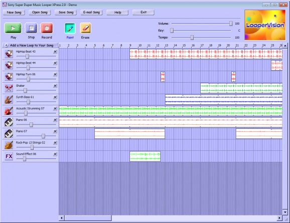

Ready. Paint across the timeline, or click Play.
Study notes & fidelity
What is reproduced
Text, beveled controls and instrument icons are redrawn as browser text, CSS and SVG against the desktop XPress 2.0 reference. Waveforms are crisp schematic approximations, not recovered audio. The original bitmap is retained only in the reference tab. The timeline is a live canvas: paint, erase, ruler-start playback, looping playhead, track levels and master controls work. The reference tab lets you compare the original directly.
This is the preserved desktop XPress 2.0 screen. The earlier online edition’s exact skin and fixed bank are still to be checked. This build is for interface study; it is not a verified reproduction of that online edition.
Sound and behavior
Ten original stereo loops are recovered from the XPress 2.0 installer’s factory Demo.sdml. Play and instrument audition use them by default. Tempo/key processing uses a browser granular approximation, not the original Sony algorithm. The earlier online edition’s bank remains unverified.
New, Open, Save, Record and Add Loop retain their XPress positions and report the demo restriction. E-mail offers a local study export; it sends nothing. LooperVision uses recovered original frames; scene timing and beat coupling are reconstructed, not the recovered original runtime. The painted demo is traced from the visible screenshot; events beyond its right edge are unverified.
Sources and limits
Archived XPress review & screenshot
Sony 2005 manual transcript
No student recordings are bundled. The source image and original product names remain attributed to their respective owners. This local study makes no claim of ownership of original artwork or sound libraries.